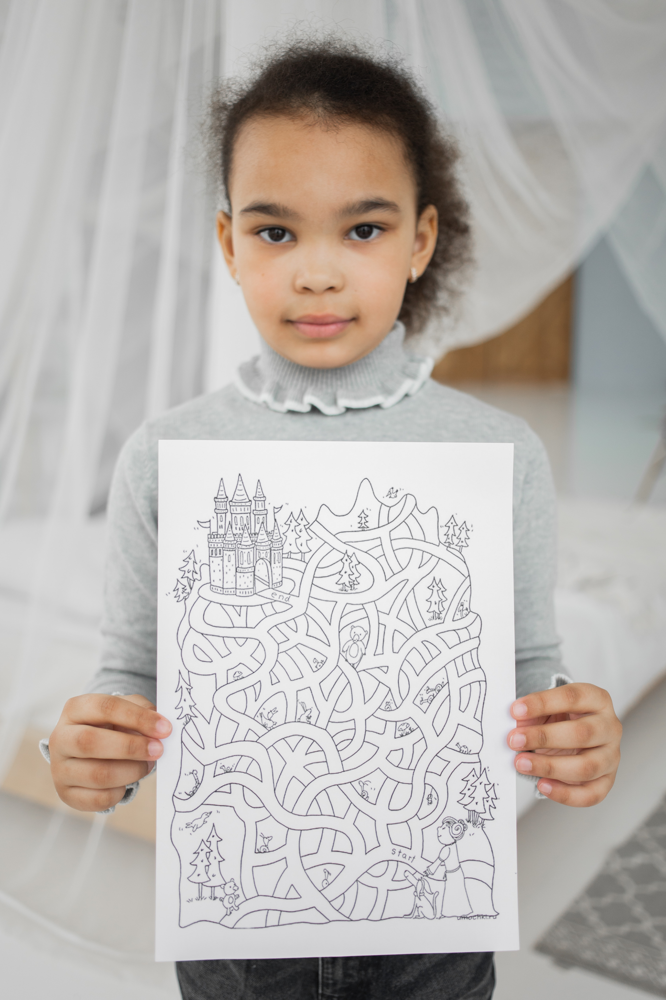

Please login to create puzzles
We have tools to make your low-content print-on-demand puzzle books quickly and easily:
- Maze generator
- 17 Clue Suduko Puzzle Generator with 4 levels of difficulty
- Word Search generator
- Unique drop words puzzle generator
- Word scramble puzzle generator
- Cryptogram puzzle generator
- Reverse word search generator
Generate a single page, a question SVG and an answer SVG, or generate a whole collection and export as a single PDF
Join Now

//=include include/about.html
//=include include/contact.html